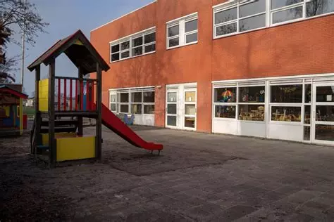

Over mij
Hallo! Zoals ik net zei, mijn naam is Leo en ik ben een nieuwe developer. Ik ben begonnen met HTML-CSS. (In September!).
In deze sectie ga ik over mijzelf vertellen. Dit betekent waar ik ben opgegroeid en wat ik later wil. doen!
Mij leven tot nu toe
Ik ben Leonardo Faleiro, en ik ben geboren op juni 22 2007 (dus ik ben 17!)
Mijn geboorteland is Portugal (Lissabon) en ik heb mijn eerste 3 jaartjes daar gewoond.
Gepaakt van istockphoto.comNa dat ben ik verhuisd naar Engeland (London) voor ongeveer 8 jaartjes, en nu zit ik hier in Nederlands!
Van alle landen die ik heb gewoond, is Nederlands mijn favoriete land.
Mij studies
 Gepaakt van zijn eigen schoolsiteIk zat eerst op de basisschool OBS De Kameleon, dan had ik ISK-lessen.
Dan ging ik naar vmbo en ik had een versnelde MBO-3-opleiding in mijn laatste jaar of vmbo, maar ik heb Het is eigenlijk niet leuk gevonden, dus ik heb gekozen voor Software Developer. (leuk toch)
Mij hobbies
Dit is een video!(Hier is de site!)Zoals andere mensen heb ik ook hobby's en routines.
Dit is bijvoorbeeld gamen (ik speel games zoals Minecraft, GTA 5 en Wuthering Waves), en af en toe een beetje anime kijken. (meestel Action Animes)
Een andere hobby van mij is eigenlijk gymmen. Ik ga ten minste 2-4 keer naar de gym en als niet, ga ik Lekker een thuisworkout doen. Ik doe ook een beetje strekken (heel gezond voor jou).